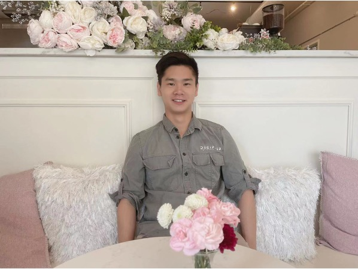

Hello!
I ♥ Coffee.
I'm currently pursuring Computer Science and Data Science double major at the University of Michigan.
I'm looking for an internship as a software engineer.
Education

My Work Experience
Internship
| Dates | Work | Description |
|---|---|---|
| May 2022-Present | Research Assistant with Professor Kim at University of Michigan |
|
| Jul.2021-Aug.2021 | Industry Analyst Intern at The Pacific Securities |
|
Projects
Insta485 Web Project
| Details |
|---|
|
Piazza Posts Classifier
| Details |
|---|
|
Automation Web Screenshot
| Details |
|---|
|